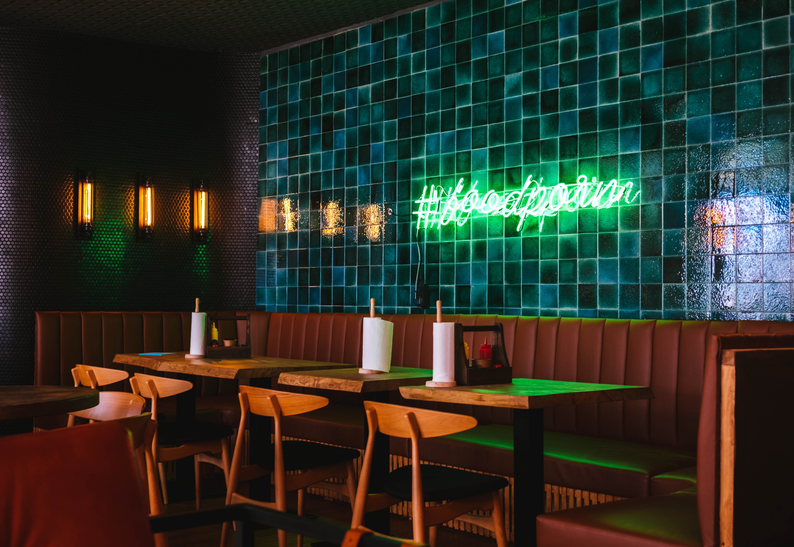

Es un lugar acogedor y alegre, con un ambiente informal y relajado que invita a los comensales a disfrutar de una comida deliciosa en compañía de amigos y familiares. El aroma a carne asada, cebolla, cilantro y limón llenan el aire, creando una atmósfera irresistible y tentadora.

Los comensales pueden elegir entre una amplia variedad de tacos, desde carne asada, pollo y pescado hasta opciones vegetarianas como frijoles con aguacate. Los tacos se sirven en tortillas de maíz recién hechas, con una variedad de salsas caseras y guarniciones, como limones, cilantro y cebolla.

En general, el restaurante de tacos es un lugar perfecto para disfrutar de una comida informal y deliciosa, en un ambiente relajado y acogedor que refleja la cultura mexicana.
Contactanos el Facebook, Twitter o Instagram.